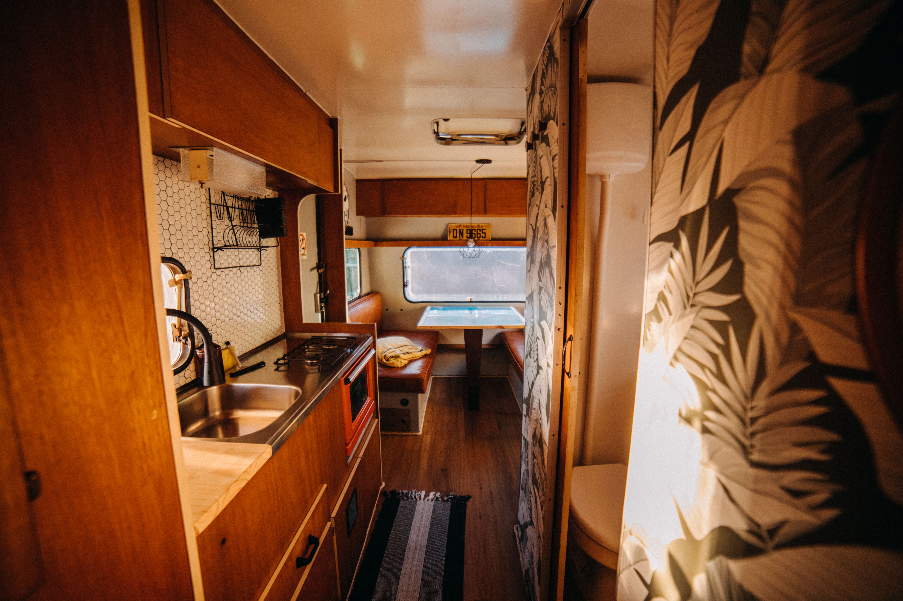
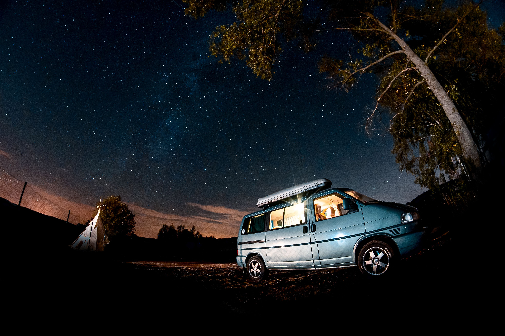

The Real Cost of Life on the Road
L2-L3 · The Rent You Leave Behind

Imagine replacing a monthly rent payment with a tank of gas and the freedom to wake up somewhere new. No apartment lease, no traditional commute, and no permanent address tying you to one location. For aspiring van-lifers, the financial appeal can be just as powerful as the promise of adventure. But the road to a simpler lifestyle isn't always paved with savings.
Housing affordability has become a growing concern across the United States.
According to Harvard University's Joint Center for Housing Studies, approximately 22.7 million renter households spent more than 30 percent of their income on housing in 2024.
With nearly half of American renters considered cost-burdened, it is understandable why alternative living arrangements attract attention.
For some, van-life represents an opportunity to reduce housing expenses and redirect money toward travel, personal interests, or financial independence. Others are drawn to minimalism, preferring a smaller living space and fewer possessions over the ongoing costs of a traditional home.
However, giving up rent does not mean eliminating housing expenses. It means changing what those expenses look like.
The first major investment is the vehicle itself. A used cargo van may offer a more accessible starting point, while a newer model or professionally converted camper can require a significantly larger investment.
Conversion company The Vansmith estimates that basic do-it-yourself conversions may cost approximately $5,000 to $20,000 in materials, while mid-range professional builds may cost $30,000 to $70,000. Neither estimate includes the cost of purchasing the van.
Then there are the features that transform a vehicle into a functional home: insulation, ventilation, electrical systems, water storage, cooking equipment, and somewhere comfortable to sleep. Each decision affects the budget, and prioritizing appearance over functionality can become an expensive mistake.
For aspiring van-lifers, the smartest investment may not be the most impressive build. Starting with essential equipment, renting a camper for a trial trip, or testing a simple weekend setup can help reveal which conveniences are genuinely necessary.
There is also an important distinction between choosing van-life for adventure and turning to vehicle living because traditional housing is unaffordable. The ability to purchase a reliable van, maintain savings, and travel voluntarily is not equally available to everyone.
Ultimately, financial freedom on four wheels isn't determined by how little someone owns. It depends on whether their lifestyle can remain affordable, comfortable, and sustainable long after the excitement of the first journey fades.
L4-L5 · The Budget That Moves

A beautiful campsite may be free, but getting there rarely is.
One of the biggest financial misconceptions surrounding van-life is that eliminating rent automatically creates a low-cost lifestyle. In reality, monthly expenses depend heavily on how frequently someone travels, the vehicle they drive, and the level of comfort they want to maintain.
Fuel is an obvious expense, but it is also one of the easiest to underestimate. A traveler moving between destinations every few days will generally spend more on fuel than someone who remains in one region for several weeks. Planning shorter routes and staying longer in individual locations can help reduce costs while creating more opportunities to explore.
Vehicle maintenance introduces another layer of financial responsibility. Oil changes, tires, brakes, and unexpected mechanical repairs are no longer simply transportation expenses. When a van is also someone's home, a breakdown can mean losing both mobility and shelter. An emergency repair may also require temporary lodging while the vehicle is being serviced.
Insurance deserves similar attention. Coverage needs can change depending on whether a van is used recreationally or as a primary residence. Travelers should confirm that their policy accurately reflects the vehicle's conversion, contents, and intended use rather than assuming ordinary automobile insurance provides sufficient protection.
Then come the less obvious expenses: campground fees, laundry, showers, drinking water, mobile internet, propane, groceries, and occasional paid parking. Even travelers who frequently use free dispersed campsites may need to visit developed facilities to refill supplies or access essential services.
For those already living on the road, tracking expenses can reveal patterns that are difficult to recognize from day to day. A month spent traveling continuously might cost considerably more than one spent exploring a smaller area. Seasonal changes, repairs, and changes in income can also affect the balance.
Before making the transition, aspiring van-lifers should build a realistic budget that separates initial purchases, predictable monthly expenses, and emergency savings. Research vehicle-specific ownership costs, obtain insurance quotes, and compare several possible travel styles. Remember that an existing vehicle loan or other financial obligations may continue even after moving into a van.
It is equally important to consider the financial responsibilities that don't disappear with a change of address. Health insurance, debt payments, taxes, retirement savings, and access to emergency funds still matter.
Van-life can absolutely be a pathway toward greater financial flexibility. But the greatest savings don't necessarily come from living in the smallest space or traveling the farthest distance.
Sometimes, freedom means driving less, planning more, and knowing that the next unexpected expense won't bring the entire journey to a halt.